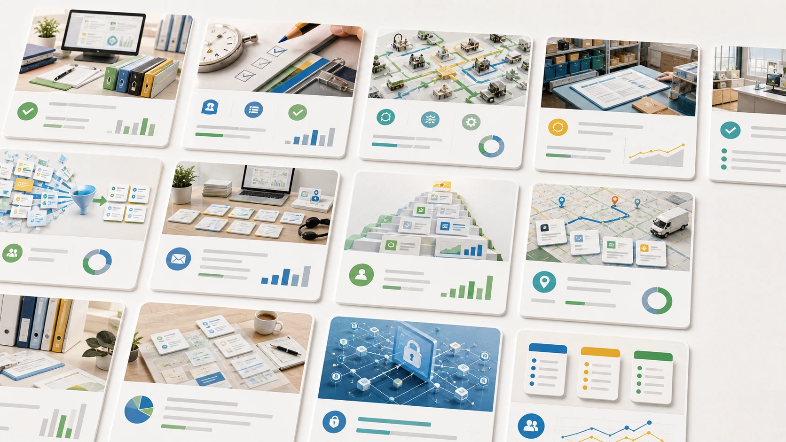

毎朝1〜2時間の調査とメール対応を、要点の見直しだけに。
全社員が出社時に行っていたリサーチ業務、メールチェック、メール返信を整理。必要情報を集約し、返信文のたたき台を作ることで、毎朝の作業を大幅に短縮。
まずは無料30分診断から
株式会社HAYASHI CREATIVE
社員からの質問、問い合わせ対応、新人教育、見積もり確認、経理確認、資料作成、同じ説明の繰り返し。その仕事を社長が抱え続ける限り、会社は社長依存のままです。社長の経験や判断基準を、社員が使えるチェックリスト・手順・返信文に変えていきます。
その結果、社長への確認が減り、社員の判断・対応・教育の質が安定します。
申し込み後、1〜2営業日以内に日程候補をご案内します。
中小企業の現場を知る経営者として、AIを実務で使える形に落とし込みます。
社長に集中する仕事
毎日の質問対応や承認に追われるほど、売上づくり、幹部育成、採用、利益改善など、社長にしかできない仕事へ使える時間が減ります。
もう一つの損失は、社長の経験が社内で共有されないことです。「社長に聞かなければ分からない」ままでは、見積や返信のたびに仕事が止まり、新人教育も毎回やり直しになります。
支援実績
単にAIを入れたのではなく、毎日繰り返している仕事を整理し、確認すべき情報と判断基準をそろえた実績です。
全社員が出社時に行っていたリサーチ業務、メールチェック、メール返信を整理。必要情報を集約し、返信文のたたき台を作ることで、毎朝の作業を大幅に短縮。
確認すべきサイト、見るべき指標、記録すべき内容を整理。相場確認を、毎日見に行く作業から、必要情報を確認する作業へ変更。
見積書のたたき台、概算、仮工程表、法令や注意点の事前チェックをAIで整理。現場で確かめる条件が明確になり、初動を早められます。
地域特性、曜日、天気、気温、イベント、過去売上を整理。感覚だけに頼らず、仕込み量・原価・シフトをデータで判断できるように。
毎月の請求書確認、領収書整理、入金チェック、支払予定の確認項目を整理。経理データを読み込み、会計ソフトに自動的に渡せる形に。担当者が迷わず見直せるチェックリストと社長確認用の要約を作りました。

※削減時間は、支援対象業務の作業時間をもとに算出した目安です。業務量や体制により変動するため、御社の削減余地は無料診断で確認します。
解決策
AIを導入しても、その場で質問するだけでは日々の仕事はあまり変わりません。
まず、見積や問い合わせ対応で何を確かめ、どの条件なら上司へ相談するのかを決めます。その基準をAIにも読ませることで、毎回ばらばらだった回答をそろえられます。
社員が実際の仕事で使える手順まで作って、初めてAIが会社の助けになります。
AIに任せるのは作業だけではありません。見積、返信、教育、例外対応で社長が普段見ている基準を整理し、社員が見直せる表にします。
まずは、社長が普段どこを見て決めているのかを、一緒に言葉にしていきます。
上司が毎回説明する。
社員が同じようなことを何度も聞く。
新人教育が属人的で、人の入れ替わりのたびに引き継ぎに多くの時間を取られる。対応品質にばらつきが出る。
社長がいないと判断が止まる。
担当者とご支援体制
1979年岡山県岡山市生まれ。
株式会社HAYASHI CREATIVE代表。
飲食、物販、不動産、水上スポーツ、ビジネスコンサルなど5つのビジネスを立ち上げ、すべて利益をあげることに成功。現場で売上と利益を作ってきた経営者目線で、御社の業務改善を行います。
AIを活用して、経営判断の準備、社員育成、管理業務の負担を軽くするだけでなく、現場経営の目線で、どこを仕組み化すれば利益につながるかまでサポートします。
東京でシステムエンジニアとして20年以上、AI活用スタートアップのCTOを務めています。
防衛庁システムの開発や、高レベルのセキュリティと正確性が必要な領域で開発責任者を担当。ベンチャー企業ではフルスタックCTOとして設計・開発、精度改善まで一貫して担当し、GoogleのAIスタートアップ支援に正式採択されました。
現在は東京大学のAI講義で講師として在籍しながら、中小企業のAI活用による社会課題解決に取り組んでいます。
ご支援の進め方
まずは御社の業務を見ながら、どこを任せると社長の時間を空けられるかを整理します。必要なことだけを、一つずつ進めます。
社長が抱えている確認、説明、社員教育、返信業務を整理し、AIで任せられる候補を洗い出します。
業務を1つ選び、優先度の高い単純作業や繰り返し作業を整理します。現場で判断できる基準、見直しリスト、返信文のたたき台まで作り、最終的に「人がAIを使って仕事をする」流れを目指します。
毎月1つずつAIに任せる仕事を増やします。社長の経験や判断基準を社内で共有し、社員がAIを使い続けられる体制を作ります。
社長が抱えなくてよい仕事を洗い出します。導入前提でなくても相談できます。
まず1つの業務に絞り、社員が手順に沿って進められるようにします。チェックリストや返信文のひな型を作り、納品後1ヶ月の無料サポート付きで実際に使えるところまで支援します。
複数業務をまとめて整え、見積、問い合わせ、教育、経理確認などで社長依存を本格的に減らします。成果が出始めた会社向けの本格導入です。
毎月、社長の確認を減らす仕組みを1つずつまとめます。継続支援が必要な企業にご提案します。
社長が普段どこを見て決めているのかまで記録するため、担当者が替わっても教え直す負担が減り、お客様への対応も安定します。導入後1ヶ月は無料でサポートし、現場で使いにくい部分を調整します。
※社長への確認、社員教育、見積、問い合わせ、経理など、繰り返し業務を減らしたい企業向けです。ご支援内容は、業務範囲、資料量、社員研修、個別システム連携の有無を確認したうえでご案内します。
無料診断の申し込み
AIを入れる前に、業務整理だけで改善できる場合もあります。その場合も、率直にお伝えします。
初回相談で機密資料の提出は不要です。
QRコードを読み取り、「30分診断希望」と送ってください。